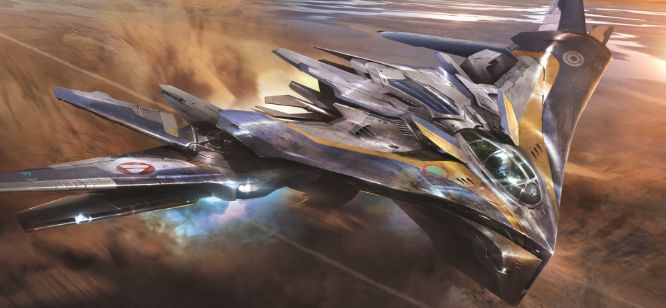

LES GARDIENS DE L'ÉCOLOGIE

Les gardiens de la galaxie sont une équipe de héros composée de Star Lord, Groot, Gamora, Rocket, Drax et Nébula. Ces déglingos de l'espace parcourent l'univers afin de le protéger et d'y faire justice. Malheureusement cela laisse parfois quelques traces dans les multiples mondes qu'ils visitent (si ça n'entraine pas leur totale... disparition). En effet
Les Gardiens, des Héros qui n'ont pas ( tous ) la main verte
Les gardiens de la galaxie sont-ils vraiment des héros ? Sûrement pas pour l’écologie ! Il devient urgent de se pencher sur leurs délits
Pollution automobile et bilan Co2

Tandis que nos gardiens parcourent des kilomètres avec leur vaisseau, le Co2 devient de plus en plus présent dans notre atmosphère.
Comment combattre le Co2 émis par les gardiens ?

Heureusement pour nous, nous disposons aujourd’hui de nombreux moyens pour lutter contre le réchauffement climatique. En voici quelques-uns.